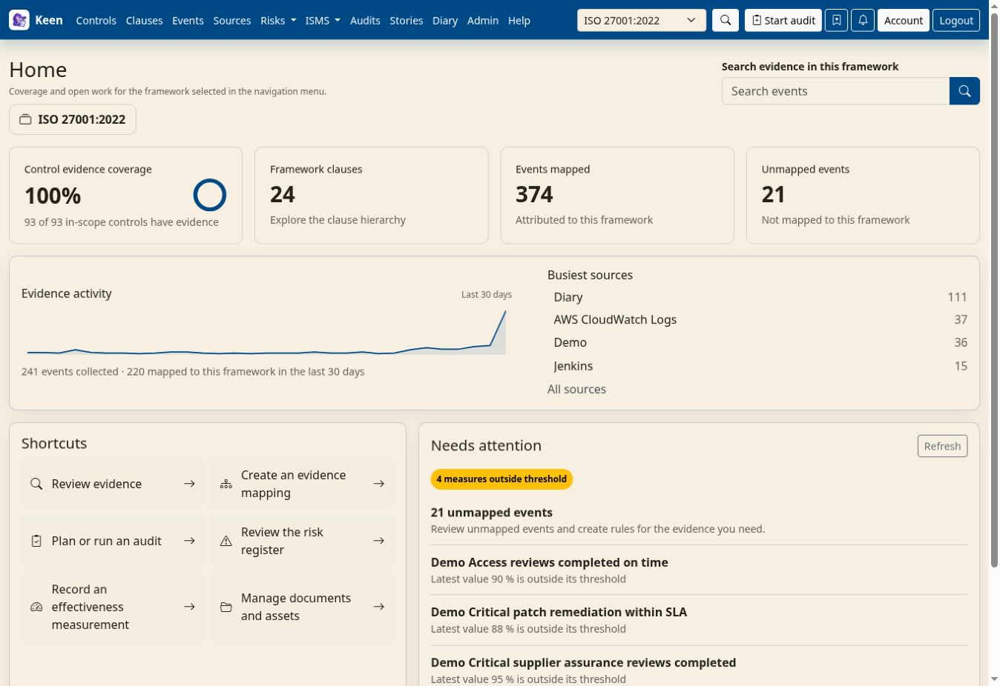

Using Keen
Getting started
Chapter 1 of 16
Follow the evidence through Keen
This chapter gives you the shape of Keen in a few minutes: the idea behind it, the one screen you return to, and how access works. Everything else in the handbook builds on it.
Keen rests on one question: what activity would show that a control is operating? A backup job that ran, a pull request that was reviewed, a restore test that someone recorded. Keen collects those records as events, relates them to framework controls, and lets you review, question and sample them for an audit.
- Collect events from your systems, or record them by hand in the Diary.
- Inspect an event: who did what, when, with what outcome.
- Map events to controls with a rule, starting from a real event.
- Preview what the rule matches before you apply it.
- Measure effectiveness over time with targets and observations.
- Audit: sample the evidence, ask questions, record findings.
- Improve: look for unmapped events, gaps and measures outside their thresholds.
For example, a restore-test record supports backup and continuity controls. A recurring measurement shows whether recovery targets are being met. An auditor samples both and writes down what was verified.
Get started
Start with a framework and a scope
A framework is the catalogue of controls you assess against. Choose one in the framework switcher in the navigation bar before you look at controls, clauses, coverage or the Statement of Applicability. The choice follows you through the application. Switching framework shows the same evidence and risks through a different catalogue.
Most people begin with the Keen Assurance Framework (KEEN-AF:1.0), a practical set of controls that works with the reusable risk library. Treat it as a starting point for your own programme.
Scope comes next. Agree which parts of the organisation, which assets, which people and which frameworks are in play. For each relevant control, record why it is in or out of scope and link the policies, risks and evidence that support that decision.
Going deeper: where KEEN-AF comes from
KEEN-AF is based on Vanta's controls, licensed under the Apache License, Version 2.0 (Copyright 2021 Vanta Inc). Keen's adaptations cover control organisation, identifiers and consolidation of duplicates. Keen itself is also licensed under Apache 2.0.
Certification and audit conclusions need their own assessment process. When you apply an external standard, consult its licensed text.
A practical first session
- Sign in and select the framework you intend to assess.
- Open Controls and the Statement of Applicability, and Clauses when the framework has them.
- Add your assets and responsible people under ISMS.
- Create one asset-specific risk, directly or from the reusable library.
- Ask an administrator to configure an evidence definition for one operational source.
- Open a collected event, its artefact and its mapped controls.
- Create an audit and sample that event, with a note on what it demonstrates.
The home page
The home page is the screen you come back to. It follows the framework you selected and shows, for that framework, how many in-scope controls have evidence and how many events are mapped. A Clauses card appears when the framework has clauses. The shortcuts offered follow your permissions.


Needs attention gathers the things worth a look: controls without evidence, open audits past their end date, and effectiveness measures whose latest numeric entry is outside its threshold. Choose Refresh to update the overview.
Workspace sections keep a connected view. Zoom into a framework section or a record to follow its evidence and relationships, then use Zoom out to go back a level or Home to return to the overview.
Review the evidence behind each coverage count. A count tells you that linked evidence exists. Whether that evidence is relevant and sufficient is your judgement during review.
Going deeper: what Needs attention checks
Threshold comparisons happen only when the measure and its entry use the same unit. Administrators also see enabled API collectors with consecutive failures; those collection checks cover the whole installation, whichever framework is selected.
Sign-in, accounts and permissions
Open the Keen address your administrator gave you and sign in with the method enabled for your installation: a local account, or your organisation's identity provider. Your administrator manages accounts, groups and permissions.
An administrator has full access. Everyone else receives explicit permissions, directly or through group membership. Read and manage permissions are separate, so an account can see a register without being able to change it. If a button or page you expect is missing, ask for the specific permission you need.
Going deeper: the permission families
events.readfor evidence.audits.read,audits.manageandaudits.adminfor audits.risk.readandrisk.managefor risks; risk permissions also extend to the ISMS, PESTLE(E) and interested-party registers.pestle.readandpestle.manage;interested_parties.readandinterested_parties.manage;isms.readandisms.manage.stories.read,stories.manageandstories.adminfor stories.- Separate permissions for creating and deleting questions and incidents, and
audittrail.readfor the administration audit trail.
An inherited role is resolved from group membership.
A useful first session
If you have an hour, this tour touches each part of Keen once.
- Select a framework, such as ISO 27001:2022. Open a control and follow one of its evidence links down to the event, its supporting material and its recorded outcome. If your organisation uses more than one framework, switch to another and see the same evidence support its related controls.
- Open Risks. Pick a risk, compare its inherent and residual ratings, and read its treatment plan and control links.
- Open Keen Mitigator and describe a concern, such as “Staff use unapproved AI tools to process customer records.” Review the matching library scenarios and control suggestions.
- Visit ISMS: an objective, an asset, an effectiveness measure and a set of meeting minutes. Follow their control and clause relationships.
- Open Documents, create a draft policy and save a second content version. Look at its revision history.
- Open Stories. Follow one story from its first event to its outcome on the timeline and the flow chart, and see how notes and links tie the events to risks and documents.
- Create a small internal audit with a few controls and one document in scope. Sample an event, record a finding and review the report before completing the audit.